Tres adverbios que comparten traducciones en inglés pero hacen trabajos distintos en español: lo que sigue igual, lo que acaba de cambiar — y una pequeña trampa ortográfica al final.
Velocidad 🔊
NOTA*Mental hook · status quo vs. change.Todavía and aún describe what stays the same across the present moment. Ya describes what changes. Nearly everything else on this page is elaboration of that single contrast.
NOTA*Mental hook · "yet" is not one structure. English "yet" maps to two different Spanish structures depending on sentence type: ¿ya...? in questions, todavía no in negatives. Same word in English, opposite shape in Spanish.
①
El principio central
CONTINUITY VS. CHANGE OF STATE
Todos los usos de ya, todavía y aún caen sobre un mismo eje. Todavía y aún hablan de lo que persiste a través de AHORA. Ya habla de lo que cambió — antes de AHORA, en AHORA mismo, o que está dejando de ser.
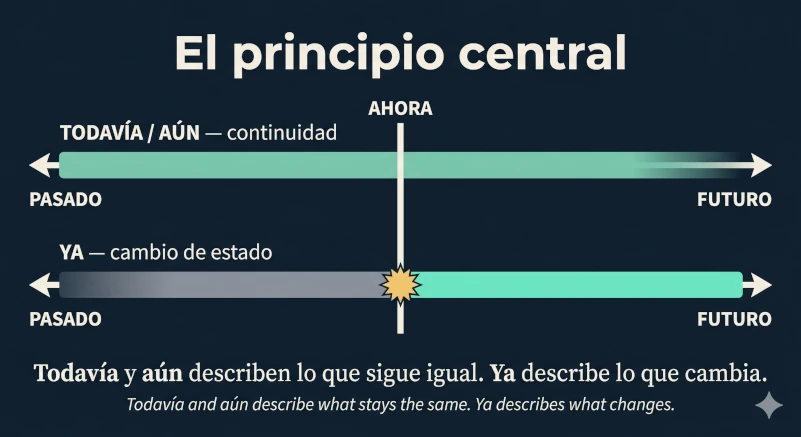
Las dos lógicas en una sola imagen — arriba, lo que persiste; abajo, lo que cambia. Clic para ampliar.
②
todavía · aún
CONTINUITY — "STILL" / "NOT YET"
Sinónimos exactos para describir un estado o una acción que continúa (afirmativo) o que todavía no ha empezado, pero se espera que ocurra (negativo). En conversación cotidiana todavía domina sin competencia; aún se usa más en registros literarios o formales — son intercambiables, no son sinónimos perfectos de uso.
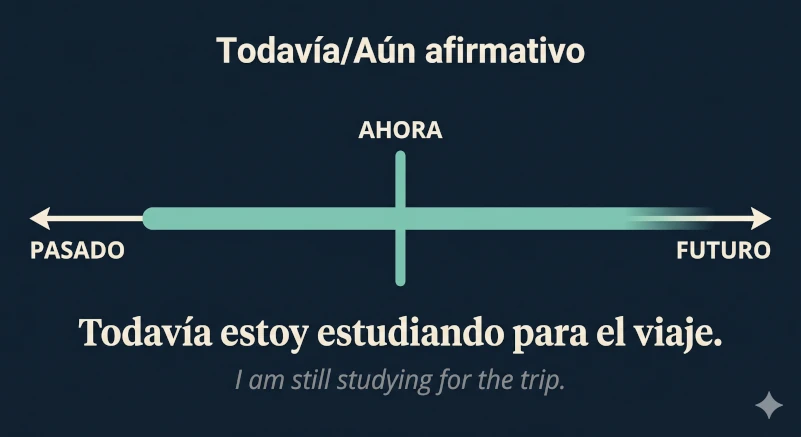
Afirmativo · "still"
Todavía estoy estudiando para el viaje.
I am still studying for the trip.
Aún tengo la intención de ir.
I still intend to go. (Same meaning, more formal register.)
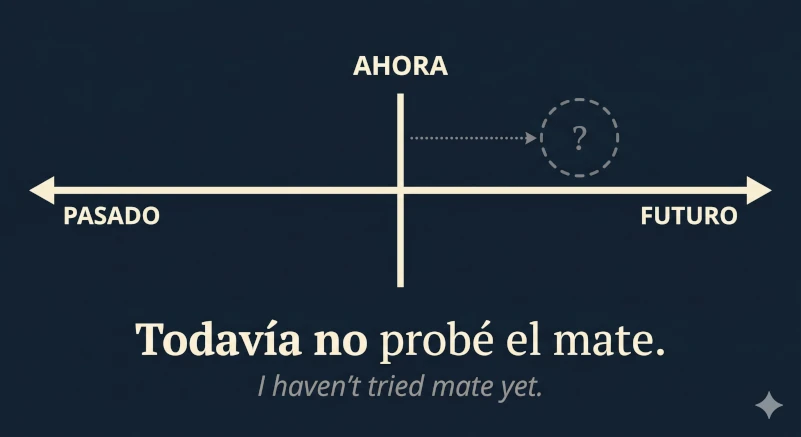
Negativo · "not yet"
Todavía no probé el mate.
I haven't tried mate yet.
NOTA*The hidden component of "not yet".Todavía no implies expectation: the action hasn't happened, but is assumed to happen. That's why it sounds strange in contexts with no real expectation — «todavía no soy astronauta» only works if the speaker genuinely plans to become one someday.
③
ya — los cuatro rostros del cambio
FOUR FACES OF "ALREADY / NOW / NO LONGER"
Ya es polifacético, pero todos sus usos comparten una misma lógica: algo ya no es como era antes. La pregunta para identificar cuál de los cuatro usos aplica: ¿qué cambió, y cuándo cambió?
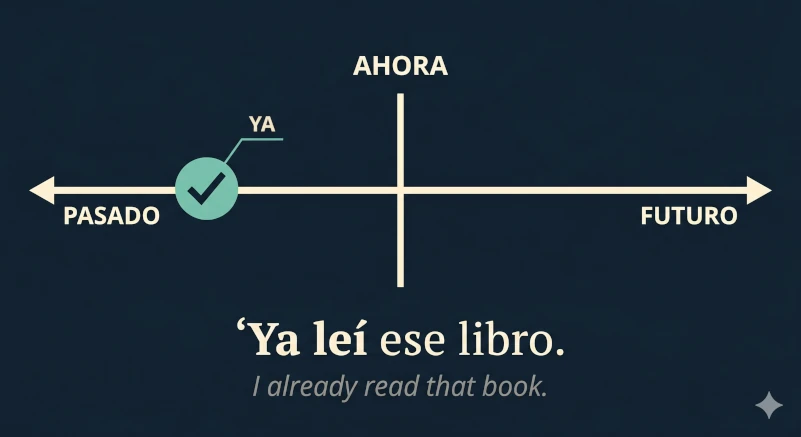
"Already" · acción completada en el pasado
Ya leí ese libro.
I already read that book.
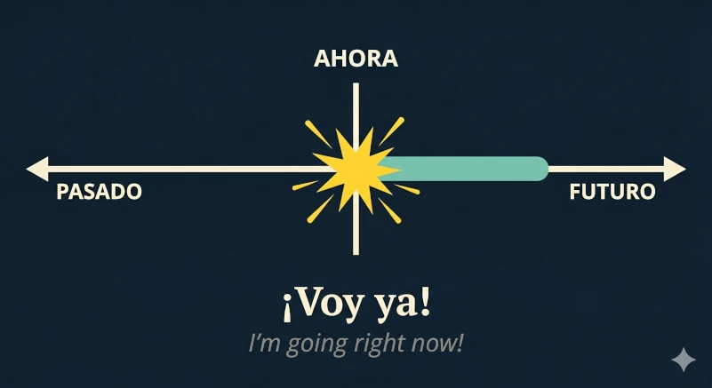
"Right now" · acción inmediata
¡Voy ya!
I'm going right now!
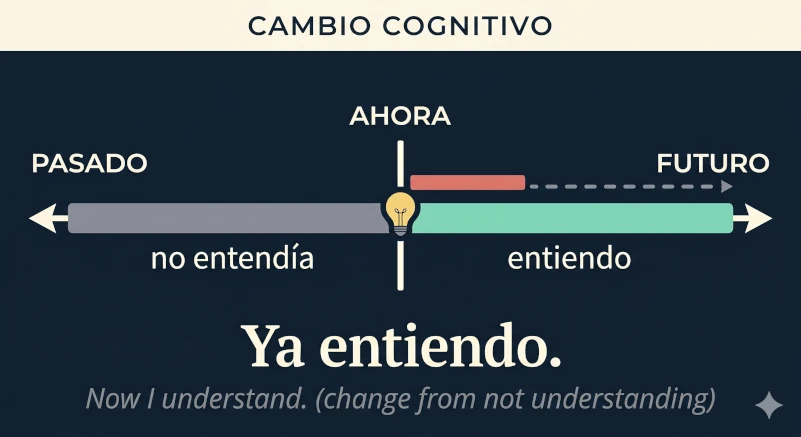
Cambio cognitivo · "now I get it"
Ya entiendo.
Now I understand. (Implies: I didn't a moment ago — the lightbulb just turned on.)
Ya sé qué hacer.
Now I know what to do.
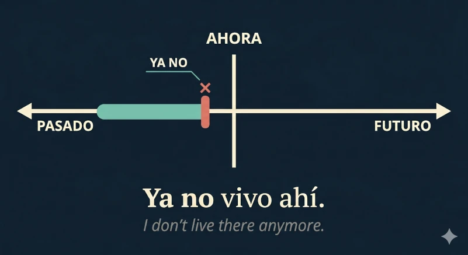
ya no · "anymore / no longer"
Ya no vivo ahí.
I don't live there anymore.
NOTA*The common thread. Look at the four timelines above — they all share one feature: there is a before and an after, and they differ. That's the signature of ya. When you hear it, ask «what changed?» — the answer is always there.
④
Traducir yet
QUESTION VS. NEGATION — TWO STRUCTURES
La misma palabra inglesa, dos estructuras españolas. En preguntas, "yet" se traduce con ya. En negaciones, se traduce con todavía no. Mismo "yet", caminos opuestos.
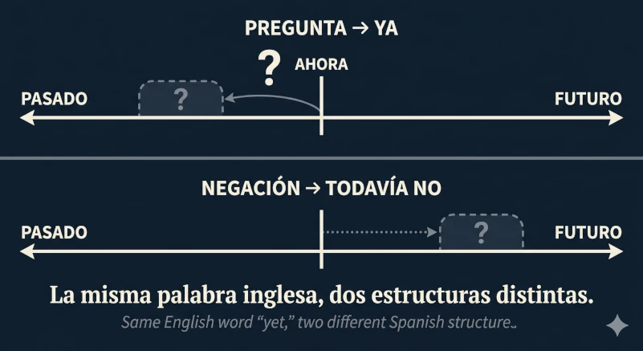
Una sola palabra inglesa, dos estructuras españolas distintas según el tipo de oración. Clic para ampliar.
Pregunta · "yet" → ya
¿Ya almorzaste?
Have you had lunch yet?
Negación · "yet" → todavía no
No, todavía no almorcé.
No, I haven't had lunch yet.
Pregunta
¿Ya llegó tu hermana?
Has your sister arrived yet?
Negación
Todavía no llegó.
She hasn't arrived yet.
⑤
Los dos negativos: todavía no vs. ya no
OPPOSITE TEMPORAL LOGICS
Ambas formas son negativas, pero apuntan en direcciones opuestas en el tiempo. Todavía no: la acción aún no ocurrió — pero se espera que ocurra. Ya no: la acción ya no ocurre — pero ocurría antes. Es el contraste más subestimado de este tema.
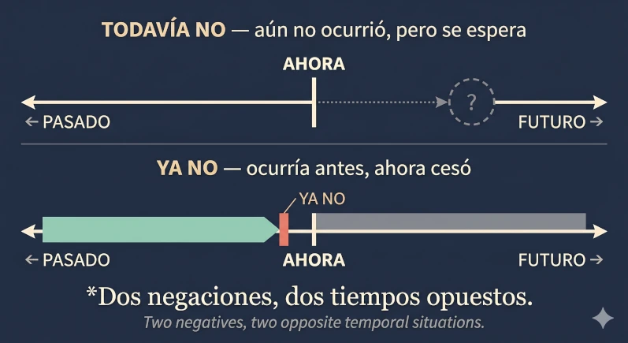
La misma negación, dos tiempos opuestos: lo que aún no llegó arriba, lo que ya se fue abajo. Clic para ampliar.
todavía no · aún no ocurrió, pero se espera
Todavía no llegó mi pedido.
My order hasn't arrived yet. (But I expect it to.)
ya no · ocurría antes, ahora cesó
Ya no me llegan paquetes.
Packages don't arrive for me anymore. (They used to.)
NOTA*Mental trick.Todavía no looks forward: an unfulfilled expectation. Ya no looks backward: a habit or state that ended. The negation is the same word; the adverb it pairs with sets the direction in time.
⑥
Usos extendidos de ya
REASSURANCE · INTENSIFIED IMMEDIACY
Dos giros idiomáticos que extienden el sentido temporal básico de ya. El primero suaviza el futuro hacia algo tranquilizador («en su momento»); el segundo intensifica el ahora hasta volverlo casi exclamativo.
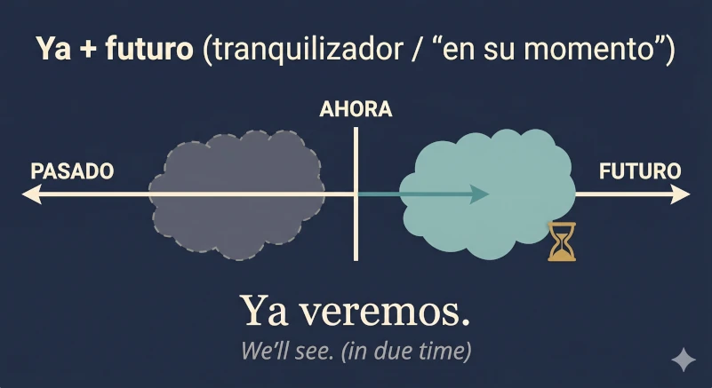
ya + futuro · tranquilización
Ya veremos.
We'll see. (In due time — no rush, no commitment.)
Ya te vas a acostumbrar.
You'll get used to it. (Reassurance — give it time.)
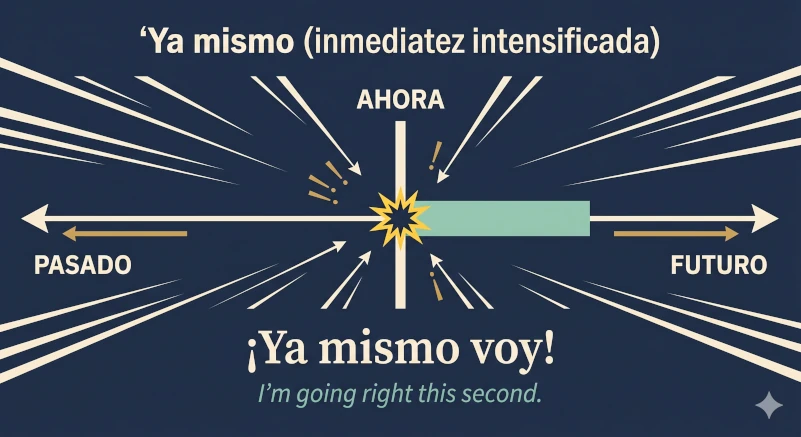
ya mismo · inmediatez intensificada
Ya mismo voy.
I'm going right this second.
⑦
ya que — cuando ya no es temporal
CAUSAL CONJUNCTION — "SINCE" / "GIVEN THAT"
Mismas letras, función totalmente distinta. Aquí ya que es una conjunción causal equivalente a puesto que / dado que. No hay nada temporal en juego — por eso la imagen abandona la línea de tiempo: el concepto no la necesita.
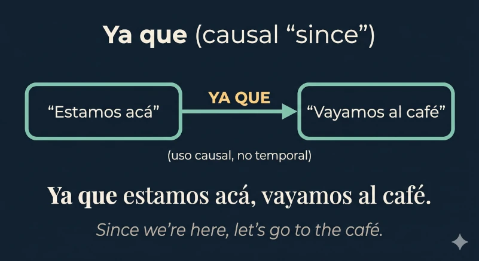
Causal · "since" / "given that"
Ya que estamos acá, vayamos al café.
Since we're here, let's go to the café.
Ya que insistes, te acompaño.
Since you insist, I'll come with you.
NOTA*Surface trap. Same letters, completely different job. The clue: ya que introduces a reason both speakers already accept — not «because I just discovered this», but «given that we already know this, let's move on». The temporal sense of ya does peek through underneath: what is taken for granted is already known.
⑧
Una tilde, dos palabras: aún vs. aun
THE ACCENT IS NOT OPTIONAL
La presencia o ausencia de la tilde cambia totalmente la palabra. Aún (con tilde) es sinónimo de todavía: temporal. Aun (sin tilde) significa incluso: aditivo o concesivo. No es una variante ortográfica — son dos palabras diferentes que comparten letras.
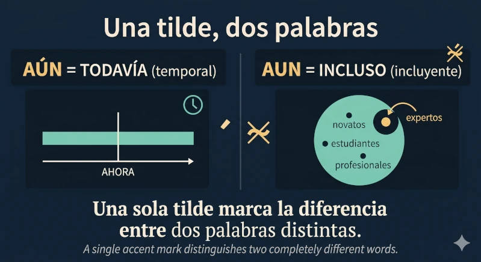
Una sola tilde es la única diferencia visible entre dos palabras distintas. Clic para ampliar.
aún (con tilde) · temporal = todavía
Aún tengo la intención de ir.
I still intend to go.
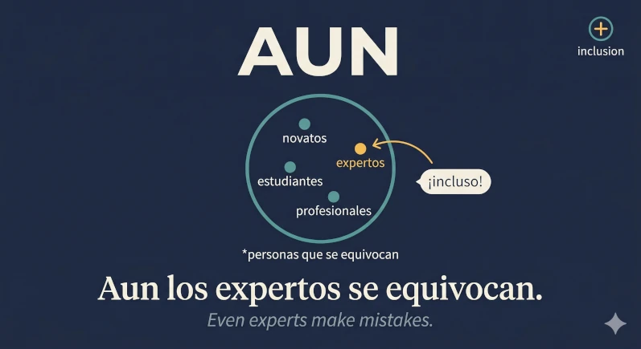
aun (sin tilde) · aditivo = incluso
Aun los expertos se equivocan.
Even experts make mistakes.
Aun así, no me convence.
Even so, I'm not convinced. (Concessive — fixed expression "aun así".)
NOTA*Quick test. If you can replace the word with todavía without changing the meaning, it takes the accent (aún). If you can replace it with incluso, no accent (aun). Pronunciation gives no clue — the distinction is only on paper.
⚐
Nota rioplatense
REGIONAL VARIANTS — RÍO DE LA PLATA
Dos puntos donde el español del Río de la Plata se distingue del neutro latinoamericano en este tema: una preferencia de tiempo verbal en construcciones con todavía no, y un puñado de expresiones fijas con ya que conviene reconocer al oído.
Preferencia de tiempo · pretérito en lugar del compuesto
En construcciones negativas con todavía no, el rioplatense prefiere el pretérito simple donde el español peninsular usaría el pretérito perfecto compuesto. En el español neutro latinoamericano las dos formas coexisten; en el rioplatense el simple domina sin competencia.
Rioplatense · pretérito simple
Todavía no comí.
I haven't eaten yet.
Peninsular · perfecto compuesto
Todavía no he comido.
I haven't eaten yet. (Same meaning, different tense.)
Expresiones fijas con ya
Cinco fórmulas conversacionales que el oído entrenado registra como rioplatenses casi al instante. Todas son neutrales en el habla del Río de la Plata; algunas se cruzan con otras regiones, pero el conjunto suena distintivo.
«ya está»
Ya está, no te preocupes.
It's done / It's fine — don't worry. (Closes a topic.)
«ya fue»
Ya fue, no vale la pena.
Forget it / let it go — it's not worth it. (Resigned dismissal.)
«desde ya»
Desde ya te agradezco.
I thank you in advance. (Formal courtesy formula.)
«dale ya»
Dale ya, que se hace tarde.
Come on, hurry — it's getting late.
«¡ya!»
— ¿Listo? — ¡Ya!
— Ready? — Done! / Right now! (One-word confirmation.)